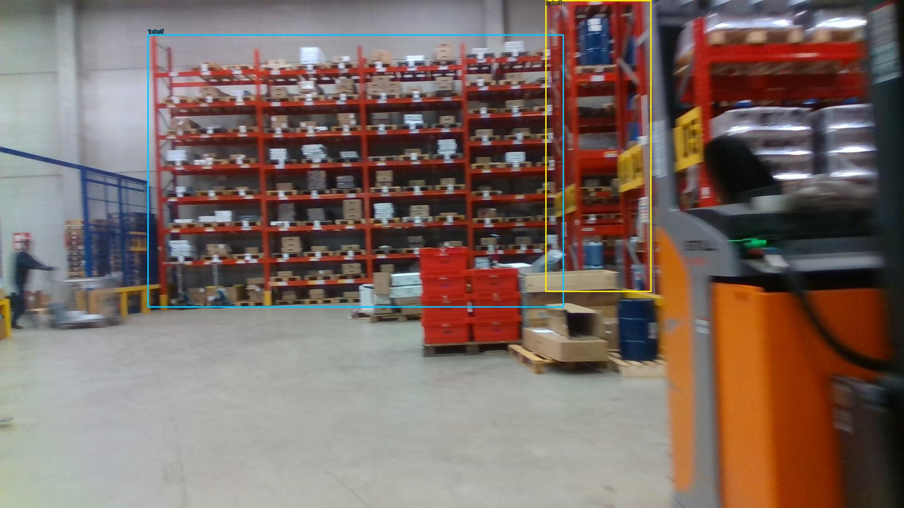
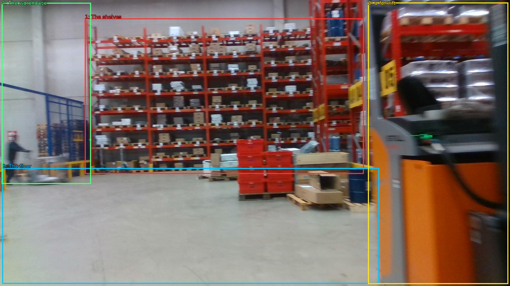

The image shows a large warehouse with rows of red metal shelves. The shelves are filled with various items such as boxes, pallets, and other storage containers. The floor is made of concrete and there is a forklift on the right side of the image. The warehouse appears to be well-maintained and well-organized. The image is taken from a low angle, looking up at the shelves.


Original · Caption raw · Grounding raw · Koordinate
Številke so lokalni ID regije. Dolge slikovne oznake so skrajšane; spodaj so celotne fraze. Napovedane regije se lahko prekrivajo ali opisujejo skupine.
| ID | Celotna fraza | bbox xyxy |
|---|---|---|
| 1 | The shelves | [319.67999267578125, 69.66000366210938, 1369.919921875, 656.1000366210938] |
| 2 | The floor | [8.639999389648438, 634.5, 1427.52001953125, 1071.9000244140625] |
| 3 | a forklift | [1385.280029296875, 9.180000305175781, 1913.2799072265625, 1072.9801025390625] |
| 4 | The warehouse | [6.71999979019165, 10.260000228881836, 342.7200012207031, 694.9800415039062] |